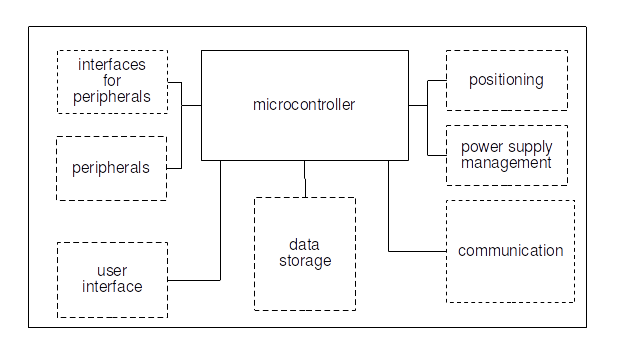
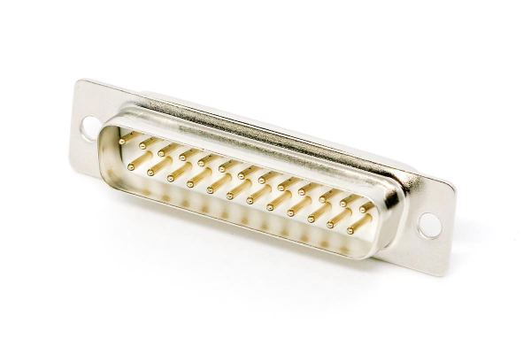
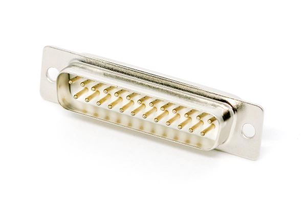
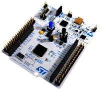

Connected Objects
Pascal Bodin

Document history
| When | What |
|---|---|
| 05-Mar-2021 | Added how to navigate |
| 24-Feb-2021 | Added links to STM32 and ESP32 hands-on labs |
| 21-Feb-2021 | Added link to a BLE hands-on lab |
| 13-Feb-2021 | Modified title |
| 01-Feb-2021 | Added Z-Wave LR |
| 19-Jan-2021 | Version 1.0 |
This work is licensed under a Creative Commons Attribution-NonCommercial-ShareAlike 4.0 International License
You can sponsor it:
Credits
- reveal.js - Copyright (C) 2020 Hakim El Hattab
- Freepik from www.flaticon.com
- material.io
- Matomo
How to navigate
- Use the right and left arrows (in bottom right corner) to navigate from one topic to another
- In a topic, use the top and down arrows

Contents
Foreword
Introduction
Example used throughout the presentation
Connected device
Positioning
Communications
Architecture
Security
Project management
Conclusion
Hands-on labs
Foreword
Who am I?
- 50% independent consultant - connected devices
- 50% senior software engineer

- First connected devices project in 1990
More information
Integrator's point of view
- Deliver on committed date and committed budget
- Deliver a working system
- Sometimes: integrate legacy subsystems
- Deliver a maintainable system
- Target: customer satisfaction
- Solving technical problems is only a means
Which systems ?
- Consumer systems
- Industrial systems
Consumer systems- Industrial systems
Industrial systems:
- Feature-rich
- Technical complexity
- More constraints (real time, security, maintainability, etc.)
Introduction
Some history
Before the '90s

SCADA (Supervisory Control And Data Acquisition)
In the '90s

M2M (Machine to Machine) LBS (Location Based Services)
In the '00s
IoT (Internet of Things)
In the '10s
- Smart Agriculture
- Smart City
- Smart Environment
- Smart Health
- Smart Industry
- Smart Utilities
- ...
Definition?
The Internet of things (IoT) describes the network of physical objects ("things") that are embedded with sensors, software, and other technologies for the purpose of connecting and exchanging data with other devices and systems over the Internet.
The topic of this presentation
Systems where objects are connected to some remote applications
⇒ Broader than the above definition
Inventor of IoT acronym
Kevin Ashton - 1999
Points to remember
- No real definition - too broad a topic
- Systems were existing before the IoT acronym
- Large diversity of user needs
- Different technologies
Example used throughout the presentation
Expressed requirements
- Monitor a convoy of 5 vehicles over Europe
- Transmit an alarm when:
- The distance between 2 consecutive vehicles exceeds a limit
- A driver presses an emergency button
- When an alarm occurs:
- Display the alarm at the operations center
- Live display of the positions of every vehicle until the end of the alarm
- Audio monitoring
- Outdoor coverage must be global

Looking at requirements
- What is the average distance between vehicles?
- Should the distance limit be modifiable?
- Which accuracy?
- How to handle road traffic constraints?
- Alarm reception delay?
- Alarm shutdown procedure?
- Installation of equipments in the vehicles?
- Power supply?
- Limitations for installation of external components (antennas)?
- etc.
Technical fields
- Distance between vehicles: sensors, GNSS...
- Manual alarm triggering: sensor
- Alarm transmission: wireless network
- Embedded / onboard devices
- Vehicle tracking: GNSS, GIS...
- Global coverage: land mobile networks, satellite...
- Confidenciality, integrity, availability
- Software
- etc.
Project management
- Many use cases
- Often difficult to get the real needs
- Several technical fields
We will see in detail all these elements...
Connected device
Our example

- Handle the sensors: alarm, distance, position...
- Handle communication means
- Handle security
- Handle business aspects
- etc.
More generally:
- Interfacing with peripherals
- Performing processing
⇒ A computer!
Vocabulary used hereafter:
- Connected object = one vehicle of our example
- Connected device = the communicating electronic element installed in the vehicle
Hardware progress
1985 - the world most powerful computer

Cray-2
- 1,9 GFLOPS (giga floating-point operations per second)
- 38 millions US$ (in 2020)
2020 - iPhone 11

- 155 GFLOPS
- 850 US$
In 35 years:
- Processing power multiplied by around 70
- Cost divided by around 38000
What do the years to come have in store?!
Memory, processing power and applications
1969 - the computer that allowed to land on the Moon

- Weight: aroung 32 kg (without the user interface)
- Power supply: 28 V CC - 70 W
- Permanent memory: 36 Kwords
- Erasable memory: 2 Kwords
- Clock: 1 MHz (83 kHz instruction cycle time)
- Simple operating system, with priority handling
Compared to current configurations:
- Very little memory
- Very little processing power
Yet it allowed to bring human beings to the Moon
Embedded software engineers can make a lot with only a few resources 🙂
Connected device architecture
- Microcontroller
- Communication
- Interfaces with external peripherals (sensors, actuators)
- Optionnally :
- Power supply management (battery...)
- Positioning
- User interface
- Peripherals (sensors...)
- Data storage
- Not on the figure: possible additional memory, outside of the microcontroller
Reminder : computer architecture


Microcontroller
- A computer in a chip:
- Central Processing Unit (CPU)
- Read-only memory (Flash memory)
- Read/write memory (RAM - Random Access Memory)
- Peripherals:
- Analog I/O
- Digital I/O
- Timers
- Serial links
- Serial buses
- Watchdog
- etc.
- Flash memory: invented at the end of the '80s
- Before:
- ROM - Read-Only Memory
- PROM - Programmable Read-Only Memory
- EPROM - Erasable Programmable Read-Only Memory
- EEPROM/EE2PROM - Electrically Erasable Programmable Read-Only Memory
- "ROM": nowadays, also used for Flash memory
Example of a microcontroller architecture


Microcontroller [board] memory

Bootloader/bootstrap
- Computer: bootstrap (some code in ROM loads some code from a disk that will load the OS)
- Microcontroller board: bootloader (optional - allows easy software update)
Important characteristics?
- Depend on the application!
- Example:
- Secure element
- Hardware encryption
- Analog blocks
- Instruction cycle time
- Memory (size, type, expandable...)
- Registers size (8/16/32 bits)
- RISC/CISC
- etc.
Hardware tools
- Development board
- Programmer, debugger
- Open source hardware
Software tools
- Cross-compilation toolchain
- Integrated Development Environment (IDE)
- Open source software
Support
- Professional support
- Active community (forums, examples...)
Microcontroller example
STM32L073RZ
- Registers size: 32 bits
- Flash: 192 Ko - RAM : 20 Ko
- Clock: 32 MHz
- Peripherals: see architecture diagram
- Price: US$ 5.26 (1) - US$ 2.17 (10000)
Development board

US$ 13
Integrated Development Environment (IDE)
- Free, based on Eclipse
- Microcontroller configuration
- Development, flashing, debugging
- Extension packages
Peripherals
Sensors
- Pressure
- Temperature
- Light level
- Magnetic field
- Gas flow
- Tilt
- Acceleration
- Contact
- etc.
Actuators
- Relay
- Motor
- Stepper motor
- Servomotor
- etc.
Other peripherals
- Printer
- Display
- OBD connector (On-Board Diagnostics)
- RFID tag reader
- etc. etc. etc.
Interfacing
GPIO (General Purpose digital Input Output)

It may be required to add:
- Optocoupler
- Relay
- etc.
Our example:
- Alarm button (input)
- Door opening (input)
- Indication of an ongoing alarm (LED) (output)
- etc.
Analog/digital conversion (ADC)

- Converting a continuous value into a discrete value
- Resolution: number of possible discrete values, or number of required bits
- Sampling frequency: number of conversions per second
- It may be required to amplify the analog signal
- Some microcontrollers include operational amplifiers (PIC16F527, PSoC 4, etc.)
Our example:
- Distance measurement
- etc.
Digital/analog conversion (DAC)
Our example:
- Siren modulation
- etc.
Serial connection
- At least 3 wires: Transmit, Receive, Ground
- Additional wires possible: Request to send, Ready for sending, etc.
- Wires definition: V.24 (RS232 in the USA)
Electrical levels:
- V.28 and RS232 : -15 V to -3 V and +3 V to +15 V
- 0 and 5 V
- 0 and 3,3 V
- Distance (V.28 and RS232): < 15 m
- Maximum speed: 20 kb/s (according to V.28)
- On short distances: 115 kb/s or more
V.28 and RS232 connectors: DB9 or DB25 D-subminiature connectors
 

For current computers, serial-USB adapters


Data transfer:

Important:
- Each side must be configured in the same way (speed, parity, etc.)
Our example:
- Transceivers control
- Satellite positioning receiver control
- etc.
SPI (Serial Peripheral Interface)

- Synchronous communications: clock and data
- Master/slave
- 4 wires:
- Clock
- Data, from master to slave
- Data, from slave to master
- Slave selection
- Full duplex

- Master side: one selection wire per slave
- A decoder can be used, or slaves can be chained
- Maximum speed: a few Mb/s
- Maximum distance: a few tens of cm
Our example:
- Display
- etc.
I2C (Inter-Integrated Circuit)

- Synchronous communications: clock and data
- Multi-master
- 2 wires:
- Clock
- Data
- Half duplex
- A master can determine whether the bus is idle or not ⇒ arbitration
Write operation:

Read operation:

- Maximum speed: a few Mb/s
- Maximum length: a few tens of cm
CAN (Controller Area Network)

- Designed for vehicles
- Multi-master
- Bus access: CSMA/CD+AMP (Carrier Sense Multiple Access / Collision Detection with Arbitration on Message Priority)
- Maximum speed: 1 Mb/s
- Maximum distance: a few hundreds of m (for low speed)
Radio
See Communications section
Software development
Cross development
With the computer:
- Edit source-code
- Cross build (cross compile and link)
- Emulate and debug
With the computer and the microcontroller board:
- Program the Flash memory
- Debug
- Every microcontroller manufacturer: full development environnement
- Often free
- Often based on Open Source software (Eclipse, gcc, etc.)
Execution environments
Operating System - OS
- Mainly: Linux
- Similar to a desktop computer:
- Package manager
- Graphical user interface is possible
Minimum required memory:
- RAM: a few MB or a few tens of MBs
- Depends on applications
Usually:
- RAM: from 512 MB to 8 GB
- Flash card: from 1 GB to 8 GB
- Linux typically requires an MMU (Memory Management Unit)
- The kernel can be configured to work without one
- Thanks to μClinux project
- Beware about applications compatibility

- Yocto: allows creation of Linux distributions
- balenaOS: Docker containers
- LYNX MOSA.ic: hypervisor
This type of environment targets boards similar to desktop computer motherboards.
Real-Time Operating System (RTOS)
- Allows for a deterministic response time
- Uses very little memory
- No way to add a new application without rebuilding and reflashing
Minimum required memory:
- RAM: a few KB
- Flash: a few KB
- Depends on the application

- FreeRTOS acquired by Amazon
- ThreadX acquired by Microsoft
- Google and Facebook support Zephyr
Available services:
- Threads/tasks
- Synchronization and communication:
- Messages and queues
- Semaphores
- Events groups
- etc.
- Timers
- Memory allocation
- etc.
Similar to what is provided by an OS
Bare metal
- No OS, no RTOS, directly on the microcontroller
- There may be an abstraction layer:
- ⇒ compatibility over a family of microcontrollers
- Arm: CMSIS
- ST: HAL, LL
- etc.
Every peripheral may generate an interruption (of the running code) to signal an event:
- Serial link:
- reception of bytes
- end of transmission of bytes
- etc.
- GPIO:
- input going from 0 to 1 or from 1 to 0
- Timer:
- timeout
- etc.
For every type of interruption, the developer specifies the functions to be called
- ISR: Interrupt Service Routine - written by the developer
- Must be short
- Usually: records event information for a processing loop
- The processing loop (background task) process the information
Analogy: phone calls processing depending on caller importance
- A list provides the importance of every caller:
- Important - to be called back immediately
- Ordinary - to be called backed when possible
- A list contains the important calls, ordered by call time, that could not be answered
- A list contains the ordinary calls, ordered by call time, that could not be answered
- Reception of a call while no ongoing call: write down the number and call it back
- Reception of a call while ongoing call:
- If ongoing call is ordinary and incoming call is important: hang up and call back
- If ongoing call is ordinary and incoming call is ordinary: add the calling number to the list of ordinary calls
- If ongoing call is important and incoming call is important: add the calling number to the list of important calls
- If ongoing call is important and incoming call is ordinary: add the calling number to the list of ordinary calls
- After hang up:
- If list of important calls is not empty, call the first number
- Else if list of ordinary calls is not empty, call the first number
- Else start a nap
Questions:
- What happens to ordinary calls interrupted by an important call?
- What happens to ordinary calls if there is always an incoming important call during an ongoing call?
Answers:
- The end of the call is lost
- The ordinary calls are no more processed
With more details:

- There may be more than one interrupt per task
- Priority management may be complex
- If only a few events, the background task does not have a lot to do (unless some events require a heavy processing)

- Entering a sleep mode is important for devices without external power supply
- Usually, several different sleep modes
- The part(s) generating events must be kept active
STM32 hands-on lab
- STM32: family of 32-bit microcontrollers based on the Arm Cortex-M processor
- various development boards are available
- RTOS (FreeRTOS, Arm Mbed) or bare metal
- write a bare-metal application for the NUCLEO-L476RG dev board
ESP32 hands-on lab

- ESP32: a Wi-Fi + Bluetooth microcontroller
- various development boards are available
- RTOS (FreeRTOS) and/or dedicated libraries
- write a sample application for the ESP32-DevKitC dev board
Our example
- Which device to choose?
- Processing power
- Memory size
- Interfaces
- Peripherals
- Software?
- OS / RTOS / bare metal
- Remote software update
- etc.
- Detailed information is required
- On peripherals to be handled
- On business functions to be implemented
- Keep some flexibility
- Beware: reducing device and peripherals cost can be expensive later on (see later)
Points to remember
- Embedded device: complex domain
- A mix of analog electronics, digital electronics and computer science
- Software development: very specific
- Rapid progression of hardware
- Long lifetime of systems
- Slow progression of software
- Growing importance of free hardware and software
- Communication adds complexity: see below
Positioning
Our example
- Tracking on alarm
- Distance between two vehicles:
- Location of every vehicle
- Exchange of locations
- Calculation of distances
- Question: which precision?
GNSS (Global Navigation Satellite System)

Principle:
- Satellite constellation
- Every satellite transmits messages
- Receiver, where location is to be calculated
- Messages contains satellite time and location
- Satellite time very accurate (atomic clock)
- With 3 satellites: location estimate
- With a 4thsatellite: synchronization of receiver clock
- ⇒ Location
- Duration/distance : 1 m ⇔ 3,3 ns
- Possible sources of errors:
- Satellite location: 2,5 m
- Satellite clock: 1,5 m
- Atmospheric perturbations: 6 m
- The most important one: multipath (reflections of satellite signals - urban canyons)
Example of Galileo accuracy
Constellations
- GPS:
- USA
- Started in 1973, operational in 1993
- 30 operational satellites in September 2020
- Orbits: 20200 km (MEO)
- GLONASS:
- Russia
- Started in 1976, operational in 1995
- 24 operational satellites in October 2020
- Orbits: 19100 km (MEO)
- Galileo:
- Europe
- Started in 1999, operational in 2016
- 24 operational satellites in October 2020
- Orbits: 23200 km (MEO)
- BeiDou (北斗):
- China
- Started in 2000, operational in 2020
- 30 satellites launched from 2017 to 2020
- Orbits: MEO, GEO and GSO
- NavIC:
- India
- Tegional system
- 8 operational satellites in 2020
- Orbits: GEO and GSO
- QZSS:
- Japan
- Regional system
- 4 operational satellites in September 2020
- Orbits: QZO
Accuracy: real-world example

Conditions:
- Smartphone GNSS receiver - GPS + GLONASS
- In 2017
- Indoors, street level, 2 m from a window
- One location every 2 s during 15 min
- ⇒ Several locations more than 60 m far from real location
Increasing accuracy
- Broadcasting corrections on regional area

Decreasing acquisition time
- First-location acquisition time: Time To First Fix (TTFF)
- To decrease it: provide GNSS receiver with almanacs and ephemeris
- These data must be transmitted to the device
- Historical name: A-GPS (Assisted GPS)
Interfacing with a GNSS receiver

- Physical level: serial link (board voltage or V.28)
- Data level:
- NMEA 0183 - not designed for GNSS
- Very often: optimized proprietary protocols

Proprietary protocols:
- SiRF (Qualcomm)
- u-blox
- SkyTraq
- etc.
- Most GNSS receivers are multi-constellations
- Antenna quality and placement are important
- It's easy to degrade reception
Positioning with a fixed infrastructure
- Trilateration: several distance measurements resulting from time measurements (similar to GNSS)
- Triangulation: several angle measurements
- Receiving antenna location ("cell")
- Beacons, for proximity detection
Dead reckoning
- Start from a known location
- Path tracking thanks to sensors: gyroscope, accelerometer, magnetometer...)
- Sensor data filtering and fusion
- Periodical resynchronization
Indoors
- Previous technologies may be used indoors, with varying results
- Installation of dedicated infrastructure is often required, for good results
Our example
- Power supply should be accessible, in the vehicles
- ⇒ No energy constraint
- It seems that inter-vehicle distance calculation may rely on GNSS data
- Where to place the GNSS antenna? Where to run the antenna cable?
Points to remember
- GNSS, not GPS 🙂
- Accuracy increases
- Acquisition time decreases
- Required energy decreases
- But it is still challenging today to position everywhere everytime
- Do not confuse positioning and tracking
Communications
Our example
- Transmit an alarm to the operations center
- Audio monitoring
- Real-time tracking
- Global coverage
- Communications between vehicles
Foreword
- Parts of the information below relate to Europe only, or to France only
- But similar elements apply in the rest of the world, with some differences in technology and in regulation
Land mobile networks
Overview
- 1G: '80s - analog networks
- 2G: '90s - digital switchover
- Services: voice, data, SMS
- Technologies: GSM/GPRS, EDGE, CDMAOne, PDC, iDEN, IS-136, D-AMPS
- 3G: '00s
- GSM/GPRS evolution, CDMA2000 1X/EVDO, UMTS-HSPA+
- 4G: '10s
- LTE Advanced
- 5G: '20s
- A network is shared among all users
- (Almost) no priority management
- Operators aim at providing coverage for population, not for territory
- Coverage can't be adapted to specific needs
- Regulated frequency bands
Data services
SMS (Short Message Service)
- 140 bytes, or 160 7-bit characters, or 70 UCS2 characters
- Concatenation is possible
- No end-to-end acknowledge
- Latency: may be high (several hours)
- Benefit: allows to send downlink data (to a terminal)
Packet data
- Based on Internet potocols (IP, TCP, UDP, etc.)
- Some limitations may apply, depending on the subscription (protocols, ports)
- 2G:
- GPRS (General Packet Radio Service) - 2,5G
- GPRS services are closed, are being closed, or will be closed
- 3G:
- Rural area: 144 kb/s at least - 384 kb/s at most, 500 km/h at most
- Urban area: 384 kb/s at least - 512 kb/s at most, 120 km/h at most
- Close to the base station: 2 Mb/s at least, 10 km/h at most
- 4G:
- 100 Mb/s downlink, 50 Mb/s uplink
- optimized for slow speed, but supports high speed, 500 km/h at most
- Historically, data services designed for:
- E-mails
- Web browsing
- Playing movies
- Connected devices have specific needs and constraints:
- Infrequent, short messages
- Often: no external power supply
- Often: low cost
- To fulfill these needs: LPWAN (Low Power Wide Area Network)
- NB-IoT (Narrowband IoT)
- LTE-M (Long Term Evolution - Category M1) (LTE = 3G → 4G)
- Other LPWAN technologie: see below

- PSM (Power Saving Mode): decreased signalling
- eDRX (Extended Discontinuous Reception): receiver switched off part of the time
- HLCom (High Latency Communications): buffering and dedicated signalling for PSM and eDRX
- Half Duplex Mode
- CE (Coverage Enhancement): repetitions on data and control channels
- etc.
- Targets:
- Achieve a 10 year battery life
- Simpler terminal ⇒ less expensive
Characteristics
- Speed: 1 Mb/s uplink and downlink
- Latency: from 10 ms up to 4 s
- Voice

- PSM (Power Saving Mode): decreased signalling
- eDRX (Extended Discontinuous Reception): receiver switched off part of the time
- Coverage Extension : increased power levels and repetitions
- etc.
- Targets:
- Achieve a 10 year battery life
- Simpler terminal ⇒ less expensive
Characteristics
- Speed: up to 158 kb/s uplink and 124 kb/s downlink
- Latency: 1,4 up to 10 s
- Voice not supported
Active networks (August 2020)
- LTE-M: 46 networks
- NB-IoT: 96 networks
- In France:
- LTE-M: Orange
- NB-IoT: SFR
How to integrate a mobile network terminal
Two main possibilities:
- Separate terminal controlled by the application
- The application is in the terminal
Separate terminal

- Physical layer: serial link (board voltage or V.28)
- Data layer:
- "AT commands"
- 3GPP TS 27.007
Command format

Response format

Commands
- Around 300 commands:
- Voice calls management
- Network services management
- Data services management
- Terminal information
- etc.
- Every manufacturer adds their own commands:
- GPIO
- File system
- TCP and UDP sockets
- FTP, HTTP, ping, CoAP, MQTT, LwM2M
- GNSS
- Date and time
- etc.
Modes of operation
- Data: requires the activation of a PDP (Packet Data Protocol) context
- Selection of the destination network: APN (Access Point Name)
- Internet, intranet
- Allowed protocols and ports
- etc.
Using PPP (Point to Point Protocol)
Using an internal TCP/IP stack

Application in the terminal
- Often, two processors: mobile network stack and application
- An API (Application Programming Interface) provides access to services
- OS (Linux) or RTOS (Thread-X, etc.)
Unlicensed LPWAN
Some frequencies can be used without a license.
Regulation
- International recommendations (ITU, CEPT, etc.)
- National regulations
⇒ ISM (Industrial, Scientific and Medical) frequencies
- Initially, assigned to non-telecommunication applications
- Nowadays, used for Wi-Fi, Bluetooth, Zigbee, etc.
- Services must accept harmful interference
- 6,7 MHz - 13 MHz - 27 MHz - 40 MHz - 433 MHz - 915 MHz - 2,4 GHz - 5,8 GHz - 24 GHz - 61 GHz - 122 GHz - 245 GHz
⇒ SRD (Short Range Devices)
- Must offer a low risk of interference with other radio services
- In case of interference: no protection from regulations
- Can use ISM frequencies and some additional ones (868 MHz, etc.)
- Limited power: 1 to 500 mW e.r.p. depending on frequency
- Possible limitation of overall transmission time (duty cycle): 1% to 0,001% depending on frequency
Two main types of LPWAN networks
- Sigfox networks
- Networks based on LoRaWAN technology

Radio:
- From terminal to network: asynchronous transmission
- Messages repeated three times, on three frequencies
- UNB (Ultra Narrow Band)
- Modulations: DBPSK (Differential Binary Phase Shift Keying) and GFSK (Gaussian Frequency Shift Keying)
- Proprietary technology
- Frequencies: 862 to 876 MHz, 902 to 928 MHz, depending on region
- Bandwidth: 100 Hz
- Speed: 100 b/s or 600 b/s, depending on region
Application payload:
- Uplink: 12 bytes
- Downlink: 8 bytes
- Limited number of messages per day and per terminal
Coverage

- Beware: presence map, not coverage map

Radio: LoRa
- Spread spectrum based on CSS (Chirp Spread Spectrum)
- Error correction in physical layer
- Proprietary technology
- Bandwidth:
- Uplink: 125 kHz or 500 kHz
- Downlink: 500 kHz
- Orthogonal spreading factors
- Data rate can adapt to conditions
- Uplink: 980 b/s to 12500 b/s
- Downlink: 980 b/s to 21900 b/s
LoRaWAN
- Communication protocol + system architecture
- ⇒ Interoperable LoRaWAN networks and terminals


Terminal classes
- Class A (All): communication initiated by the terminal - then two successive receive windows
- Class B (Beacon): class A + periodical, synchronized receive window
- Class C (Continouous): continous reception, when no transmission
Application payload:
- 51 to 222 octets, depending on data rate
- Data rate may be adaptative ⇒ variable payload size
Networks

- Beware: presence map, not coverage map
- 148 operators, in 162 countries
- In France:
- Objenious (Bouygues Telecom)
- Orange
- Community networks:
- It's possible to set up your own network
Satellite networks
Geosynchronous Equatorial Orbit (GEO)
- 36000 km above Earth
- Satellite appears at a fixed position to ground observers
- Coverage restricted to area "below" the satellite
- Minimal end-to-end latency: 2 x 36000 km / 300000 km/s ⇒ 240 ms

- BGAN M2M
- IP - up to 448 kb/s
- Latency: > 800 ms
- Coverage: almost global
- IsatM2M
- 10-byte or 25-byte uplink messages / 100-byte downlink messages
- Latency: 30 to 60 s
- Coverage: almost global
- IsatDataPro
- 6400-byte uplink messages / 10000-byte downlink messages
- Latency: 15 to 60 s
- Coverage: almost global

- Several data services
- Coverage: 2/3 of the globe
Low Earth Orbit (LEO)
- Altitude of 2000 km or less
- (Earth radius: around 6400 km)
- (ISS: between 330 and 420 km)
- Period: from 80 to 130 min
- Latency: often longer (store and forward...)
- Lower terminal power transmission
Older operators:
New operators:
PMR (Professional/Private Mobile Radio) networks
Information for France
PMR networks:
- Independent networks
- For professionals, State services, hospitals, local authorities, etc.
- Voice is the primary service
- Local or regional coverage
- Licensed frequencies:
- 29-54 MHz
- 54-68 MHz
- 68-87 MHz
- 146-174 MHz
- 174-230 MHz
- 406-430 MHz
- 440-470 MHz
- Frequency management: Agence Nationale des Fréquences (ANFR)
Technologies
- There are still some analog networks (voice - data is possible)
- Digital standards:
 (Digital Mobile Radio) :
(Digital Mobile Radio) :
- TDMA (Time Division Multiple Access) on 12,5 kHz or 6,25 kHz
- Up to 9600 b/s (raw throughput)
- Short messages and UDP/IP
 (Digital Private Mobile Radio) :
(Digital Private Mobile Radio) :
- FDMA (Frequency Division Multiple Access) on 6,25 kHz
- Up to 4800 b/s (raw throughput))
- Short messages
- Allow to:
- Communicate from terminal to terminal (directly)
- Trunking: network shared between several groups of users
FDMA - TDMA
Other digital standards:
 (TErrestrial Trunked RAdio) :
(TErrestrial Trunked RAdio) :
- For shared networks
- SDS (Short Data Service) - messages of up to 256 bytes
- Status messages
- Circuit-switched data
- Packet-switched data (IP) - up to 14 Kb/s
- TEDS (TETRA Enhanced Data Service): allows video streams
Other digital standards:

- For shared networks
- SMS (Short Message Service)
- Status messages
- Packet-switched data (IP)
- Networks not well known to the wider public, but are many:
- in 2018, 25000 PMR networks in France
- fit well applications requiring local or regional coverage
- benefits:
- Coverage can be adapted to suit application requirements
- Exclusive use of the frequencies (when no trunking)
- Legal protection against interferences
Short distance radiocommunications
- Based on IEEE 802.11 standard
- Wireless Local Area Network (WLAN)
- ISM frequencies: 2,4 GHz and 5,8 GHz
- 802.11g: up to 54 Mb/s - later standards allow more
- Range: around 100 m
- Recently: Wi-Fi HaLow (802.11ah) for the IoT:
- ISM frequency: 915 MHz
- Range: around 1 km
- Good building penetration (narrow band)
- Low energy consumption

- ISM frequency: 2,4 GHz
- Two radio modes:
- LE (Low Energy) - up to 2 Mb/s - point to point, broadcast, mesh
- Classic - up to 3 Mb/s - point to point
- Range : More than a kilometer. Less than a meter. - Observe local regulations!
Bluetooth hands-on lab
Receiving and decoding advertisement data transmitted by a Ruuvi tag
Parts:

- A Ruuvi tag - an open-source sensor node:
- Humidity + pressure + temperature sensor
- Accelerometer
- Bluetooth Low Energy
- An ESP32-DevKitC - a development board based on the ESP32, a Wi-Fi + Bluetooth microcontroller

- SRD/ISM frequency: 2,4 GHz and 868 MHz in Europe, 915 MHz in the USA
- Self-organizing mesh network
- Several hundreds of devices on a single network
- Device types: Coordinator, Router, End Device
- Data rate: 250 kb/s
- Range: 300 m line of sight, 75 to 100 m indoors
- Low energy consumption

- SRD/ISM frequencies: 868 MHz in Europe, 915 MHz in the USA (not on Wi-Fi/Bluetooth frequencies)
- Mesh network
- Up to 232 devices on a single network
- Data rate: up to 100 kb/s
- Range: 100 m line of sight
- Low energy consumption
Z-Wave Long Range
- Announced in Dec-2020
- Should supports distances of up to several miles
- Should support up to 4000 nodes on a single network
Proprietary protocols
- You can design your own protocol, or use an existing proprietary protocol
- You have to comply with local regulation
Our example
- Global coverage ⇒ satellite networks
- Small latency, for alarm transmission ⇒ GEO constellation
- To decrease latency even more: use land mobile networks when available
- Exchanging locations between vehicles to calculate distance:
- Short distance communications
- Two frequencies at least, to prevent interference attacks
- Proprietary protocol, to increase security
Points to remember
- Differentiate standard / radio technology / regulation / operator:
- A technology may be used on different frequency bands (e.g. private 4G networks)
- A standard may describe services that won't be provided by an operator
- A technology may be provided by several different operators (4G, LoRaWAN, etc.)
- Could ISM/SRD frequencies be saturated in some future?
- It is possible to install and run your own network (PMR, LoRaWAN)
- It may be required to integrate several different technologies
- Beware: with radio, data loss is certain
Data interchange
Stream or message?
- Sensors: a few (tens of) bytes
- Measured data
- Identifier
- Date and time
- Location
- etc.
- Actuators: a few (tens of) bytes
- Command to be executed
- Identifier
- etc.
- ⇒ Messages
- Voice: stream
- Video: stream
- Images: (large) messages
We will look at messages. Voix and video transmission is rare, but sometimes required (as in our example).
Why messages?
- The receiving application has to know when it has received all data related to one measure, from a sensor.
- An actuator has to know when all the information related to the command it has to execute has been received.
What is a message?
- A sequence of bytes containing all the information required for a given processing.
Technologies with message-type interface
- UDP/IP
- SMS
- LoRaWAN, Sigfox
- Messages over satellite networks
- Messages over PMR networks
- etc.
Message-type interface

Stream-type interface

Beware!
TCP/IP is a stream-oriented protocol!
Back to the serial link
- How are built the messages of a GNSS receiver?
- How are built the AT commands and responses?
- ⇒ use of delimiters (start, end)
General solutions for a simple case
- Assumed:
- No error (loss, modification)
- Data exchange does not modify data order
- (For instance: TCP/IP)
- Solution 1: time
- Wait for a minimum time between two successive messages
- Maximum time between two successive bytes must be smaller than inter-message time
- Inter-message time must be greater than jitter
- Solution 2: delimitation
- Specific start sequence
Transparency
- Let's assume that we use solution 2, with byte of value 01 as a start delimiter.
- Question: how to send value 01 in a message?
- This is the transparency problem.
Endianness
The 32-bit integer 11223344 can be stored in memory in two ways:

Big-endian: 68000 microcontroller, AVR32 microcontroller, etc.
Little-endian: x86 microprocessor, etc.
Bi-endian: Arm cores, etc.
Problem: how can a big-endian microcontroller board exchange 32-bit integers with a little-endian computer?
Serialization
How to echange data structures between computers?
struct sensor {
uint32_t sensor_id;
char sensor_name[20];
struct {
double latitude;
double longitude;
} location;
};
To answer these problems (delimitation, transparency, endianness, serialization):
- More or less complex to define your own solution
- If you are not experienced, choose an existing solution!
Serialization and endianness
- ASN.1 (Abstract Syntax Notation number 1):
- Maintained by the ITU (International Telecommunication Union)
- Notation allowing to define data structures independently from their encoding
- Associated standard encoding rules (BER, PER, etc.)
- Code generators for many programming languages
- Self-delimiting
Serialization and endianness
- Protocol Buffers:
- Developed by Google (who did not know ASN.1?)
- Code generators for many programming languages
- Requires additional delimitation
Serialization and endianness
- CBOR (Concise Binary Object Representation) :
- Defined by the IETF (Internet Engineering Task Force) - RFC 7049
- Based on JSON
- Self-delimiting
- Libraries available for many programming languages
Serialization and endianness
For specific needs: relatively easy to define your own formatting.
Communication (+ delimitation and transparency)
- MQTT:
- Message Queuing Telemetry Transport
- But does not use message queueing, and is not restricted to telemetry
- Requires a specific transport layer: ordered and lossless (TCP)
- Mixes messaging protocol and publish/subscribe service
- A non-TCP version exists (for Zigbee, etc.)
- OASIS Open standard
- Several open source implementations
Communication (+ delimitation and transparency)
- CoAP:
- Constrained Application Protocol
- Model similar to HTTP: requests on resources
- Designed for UDP
- IETF standard: RFC7252
- Several open source implementations
Communication (+ delimitation and transparency)
- Many systems use their own (proprietary) protocols
- Lot of buzz about MQTT and CoAP, but difficult to determine real market shares
- On TCP, not too complex to define your own protocol, simpler than MQTT
- On UDP (more generally: lossy message transport), more complex
Integration in the Internet
- Sigfox, LoRaWAN, etc: short messages
- Internet protocol headers (TCP/UDP/IP) are too long
- ⇒ Devices using these networks are not integrated in the Internet
A solution: SCHC
Static Context Header Compression - RFC 8724
- On LPWAN networks, stream nature is predictable
- ⇒ Context can be stored in the device and in the network
- ⇒ High level of header compression is possible

Our example
- For messages on satellite network: design a proprietary protocol
- For land mobile network, on TCP: design a proprietary protocol
- For inter-vehicles communication: design a proprietary protocol
- Real complexity lies in integration: handling several networks
- IP integration with SCHC
Points to remember
- The protocol depends on transport layer (with or without loss)
- On a byte-stream transport layer (TCP), message delimitation is required
- Decide on a protocol according to your experience, user needs and context
- Often a strong constraint: code size on embedded side
- With SCHC, IP may be used almost everywhere ⇒ real Internet of Things
Architecture
Distributed processing

- Functions in device communicate with remote functions (distributed application)
- Several types of networks, with different characteristics
- Many possible use cases
- ⇒ Layered architecture
Layered architecture
- Ideal vision!
- Pros:
- Separation of concerns
- Easier migration from one type of network to another one
- Reusing technical components is possible
- Easier maintenance
- etc.
Platforms
Generic group of layers allowing for:
- Abstraction of the communication layer
- Supply of a part of management services (users and devices)
- Supply of a part of the security
- Supply of some complex technical components (data analysis, machine learning, etc.)
- Scalability
- Hosting of the above services
Strangely enough, many platforms are available...

Pros:
- Allows to rapidly set up a full system
- Scalability (> 1000 devices?)
- May prevent from having to develop some complex technical components
Cons:
- May increase system development complexity
- May introduce uncontrolled reliability problems
- Genericity ⇒ may hinder development of bespoke systems
- Sharing ⇒ may lead to unwanted evolutions
Security
Goals
- Confidentiality
- Integrity
- Availability
Attack surface
Set of points that an attacker can use to attack a system.
How to deal with attacks
- Management governance:
- Name an executive in charge of security
- Engineered for security:
- Design hardware and software with attention to security threats
- Fit for purpose cryptography:
- Adhere to best practice industry standards
- Secure network and applications:
- Secure applications, web interfaces and server software
- Secure production processes and supply chain:
- Making sure the security of the product is not compromised in the manufacturing process or in the end customer delivery and installation
- Customer security:
- Inform the customer about vulnerabilities, provide software updates, etc.
Points to remember
- Needs for security depends on the system
- Anyway, do not underestimate - for instance: temperature in a house may indicate the absence of the occupants
- Requires a broad view
- Requires experience
Project management
Usual industrial project

Connected objects project

- Be sure to understand real needs of users
- Ensure to be prepared to integrate required technologies
- Make dedicated tools (hardware and software) for development and tests
Problems
- A connected objects system may transform existing business processes
- It could be that the customer is not able to fully understand the impact
- The project team may be not experienced enough with some technologies
- Some technologies to integrate may be not mature enough
- Some technologies to integrate may age rapidly
- etc.
Possible solution: be agile
Value:
- Individuals and interactions over processes and tools
- Working software over comprehensive documentation
- Customer collaboration over contract negotiation
- Responding to change over following a plan
This manifesto, created for software development, can provide very good results for other types of projects.
Stay agile when applying the Agile Manifesto! 🙂
- Can be used even when answering a Request for Proposal
- Good for the customer and for the integrator
- To be agile is far more important than sticking to a predefined plan
For a connected objects project
- Make prototypes and present them to the users (not only to the customer)
- Test in the field as soon as possible
- If possible, implement Over The Air (OTA) updates
- Use equipment that can be upgraded
- Use equipment with more processing power than strictly required
- etc.
Conclusion
- Developing a connected objects system can be challenging:
- Wide variety of user needs ⇒ can be difficult to find references
- It can be difficult to get the real user needs
- Several different technological fields have to be mastered
- Compared to other types of projects:
- Spend time with the users (and not only with the customer)
- Prepare for getting experienced in required technologies before the project starts
- Ensure you have the big picture in mind
- Be agile
- Look for T-shaped team members
But this is a wonderful domain! 🙂
Thanks!